Creamos un proyecto Universal 3D SRP(Universal Render Pipeline).
Necesitaremos varios Assets:
Package FirstPersonController (Os lo facilitamos nosotros).
https://assetstore.unity.com/packages/3d/environments/low-poly-environment-nature-free-lowpoly-medieval
-fantasy-series-187052.
https://assetstore.unity.com/packages/2d/textures-materials/sky/allsky-free-10-sky-skybox-set-146014.
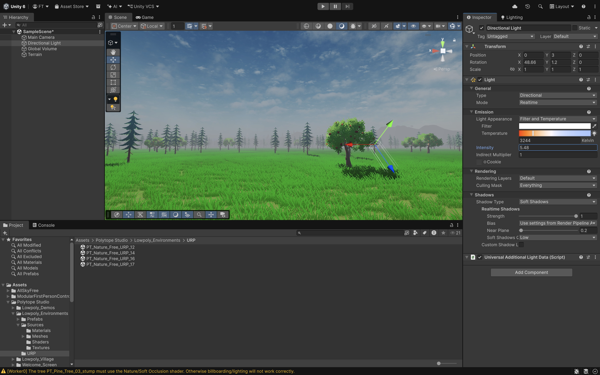
Para crear un terreno en nuestra jerarquía damos click derecho 3D Object/Terrain.
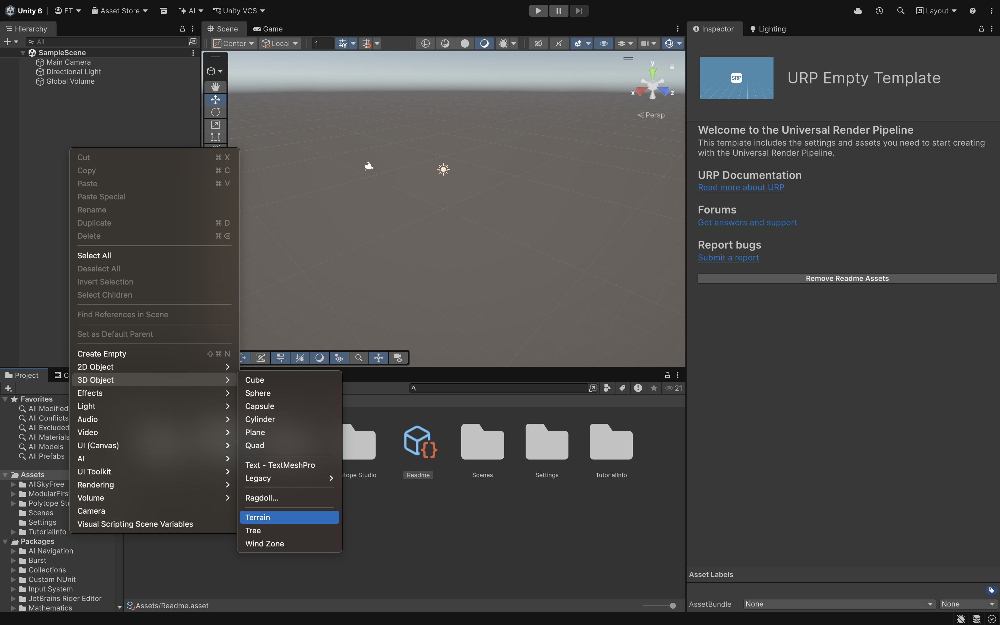
En el Terrain tenemos varios botones para poder dibujar.

Create Neighbor Terrains, para poder crear terrenos vecinos.
Paint Terrain, tiene un desplegable para poder levantar o bajar el terreno, hacer agujeros, poner texturas...
Paint Trees, para dibujar arboles.
Paint Details, para dibujar cesped.
Terrain Settings podemos poner el tamaño del terreno, el viento del cesped...
Cambiamos el desplegable a Paint Texture.
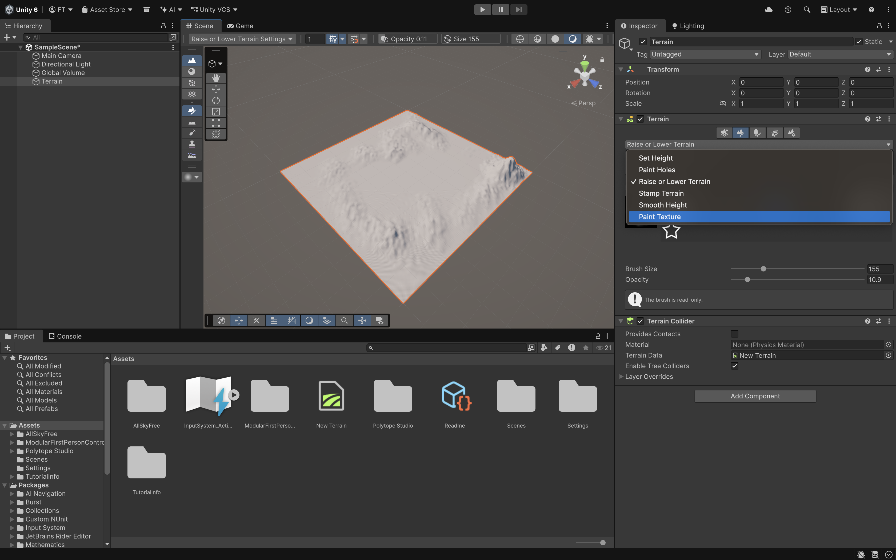
Seleccionamos el botón Edit Terrain Layers/Add Layer y añadimos una nueva layer.
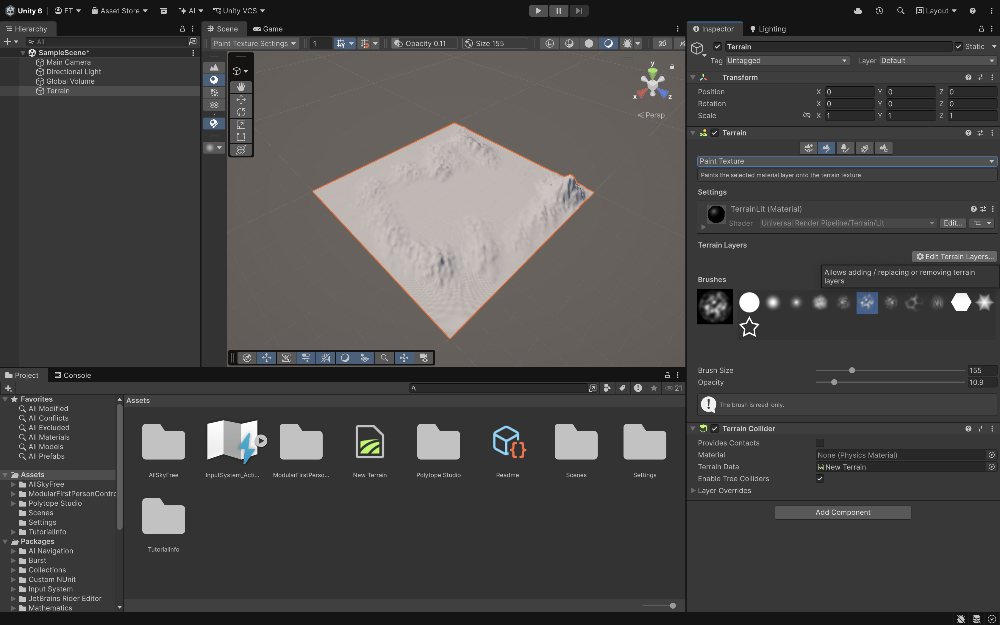
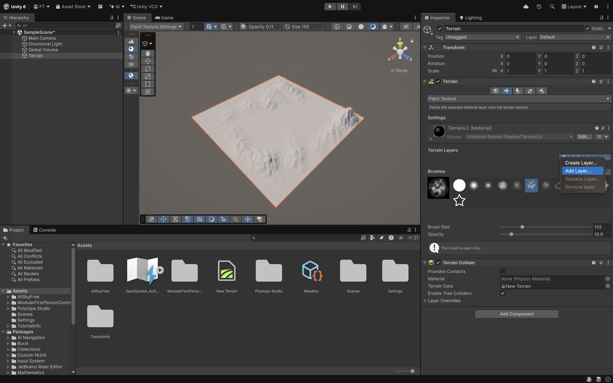
Y seleccionamos el verde y dibujamos. Podemos seleccionar Brushes para pintar.
Se puede ajustar el color en Color Tint.
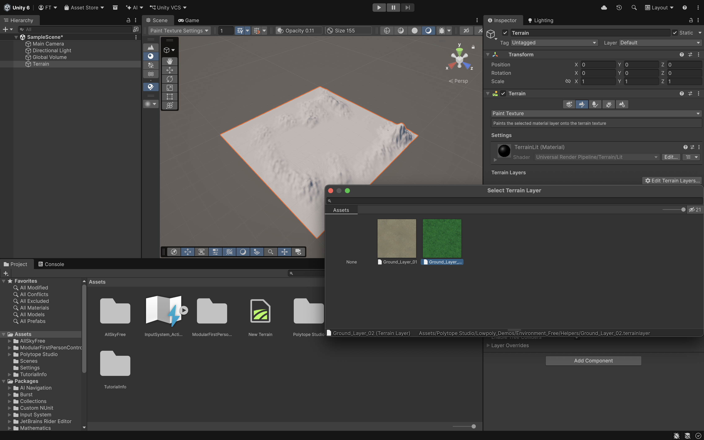
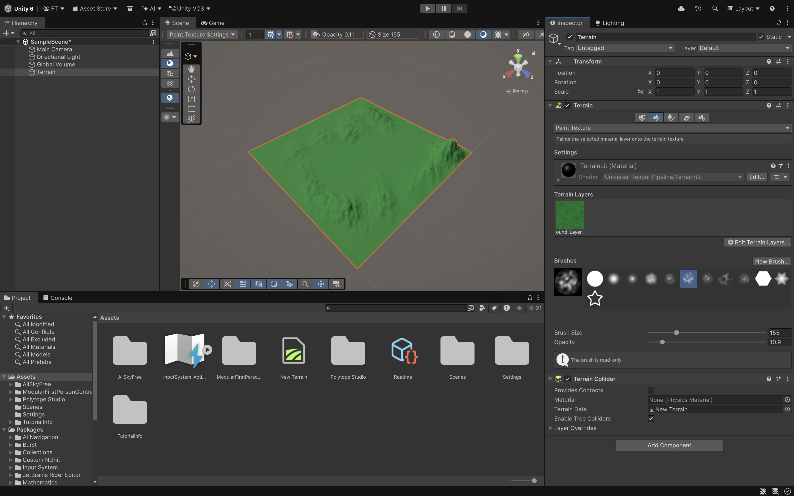
Podemos crear una nueva Layer para añadiendo un poco de marrón. Y podemos ajustar el Brush Size y el Opacity para generar zonas más marrones.
Se haria muy parecido para hacer los árboles y el cespéd.
Si no lo veis bien tendreis que ajustar en Terrain Settings el Detail Distance. Dependera también del ordenador para que vaya más rápido o despacio.
Window/Rendering/Lighting/Enviroment:
• Environment/SkyBox Material seleccionamos el cielo.
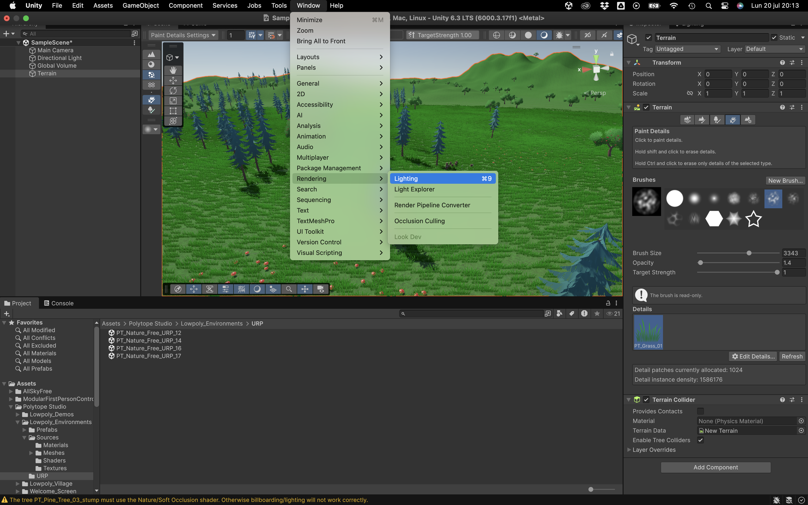
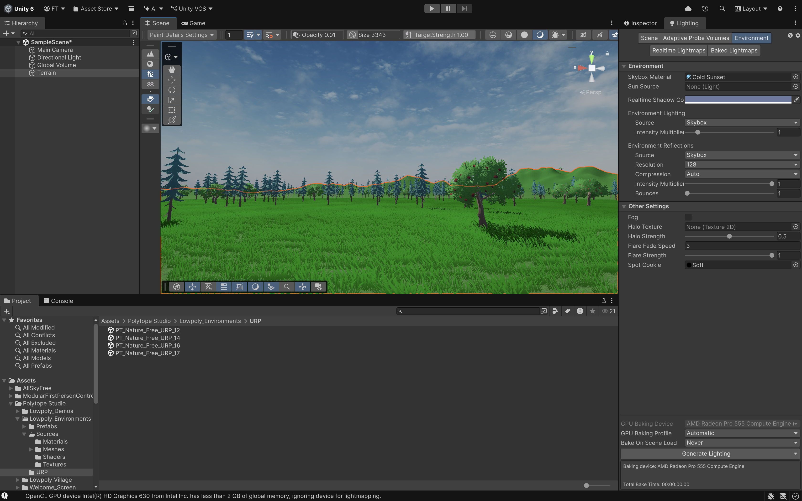
Other Settings/Fog (niebla), podemos jugar con sus atributos.
• Podemos modificar su Rotación para cambiar las sombras.
• Cambiar la Temperatura al escenario.
• Y la Intensidad para que parezca que halla un poco más de sol.
Podemos añadir prefabs de rocas.. Polytope Studio/Lowpoly_Environments/Prefabs o los que querais.
Seleccionar Main Camera para poder añadir efectos de Post Processing hay que activar Post Processing.
Global Volumen haremos algunos cambios:
• Bloom aumentamos para que las cosas que tengan ilumnación brillen más.
• Podemos añadir en Add Override:
o Color Adjustments.
o Chanel Mixer para cambiar el color rojo para darle una tonalidad más calida.
o Lift Gamma Gane para cambiar un poco el color de la escena.
Esta dentro de Post-processing ó lo podemos buscar en la lupa.
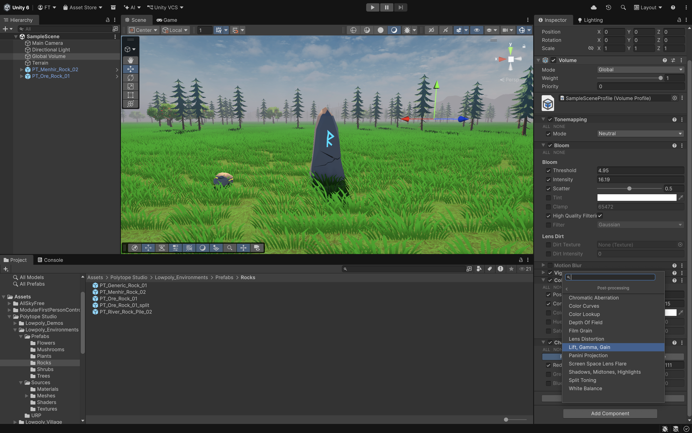
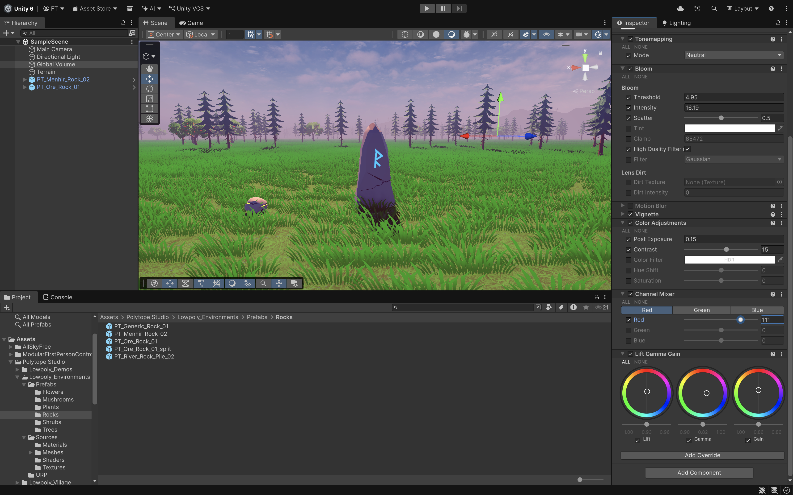
Vamos a la carpeta donde este el Prefab Player y lo arrastramos a la escena:
• Eliminamos la Main Camera.
• Dentro de FirstPersonCharacter le añadimos el Post Processing.
Podriamos ejecutar y movernos dentro de nuestro escenario.
Existe otro paquete que es Terrain Tools que tendriais que instalar si quereis. Tiene más pinceles
y es muy parecido.
Para crearlo Window/Terrain/Terrain Toolbox.